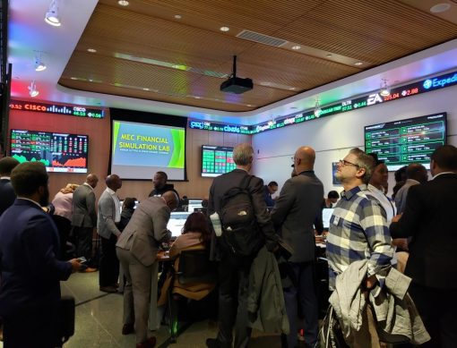

About Us
Who We Are
Media Educational Development Initiatives (MEDI) emerged from the urgent need to combat misinformation, strengthen journalism integrity, and advance public media literacy.
From grassroots training to global policy influence, we have empowered thousands of individuals—journalists, educators, and policymakers—with the tools to navigate today’s rapidly evolving media landscape.
Get Involved
A more informed and accountable public life.
We strengthen the people and institutions that make trustworthy information possible.
- IntegrityTruthful, responsible communication.
- EducationPractical skills for navigating media.
- CollaborationPartnership across communities and borders.
- Freedom of expressionSpace for people to speak and be heard.